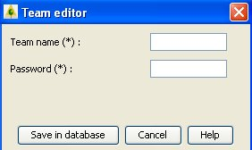
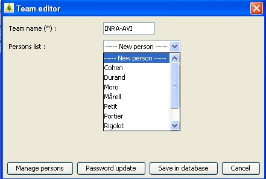

start => help_en => fireparadox
TEAMS EDITION
This interface aims at creating, updating, desactivating ou reactivating teams in the database.
TEAM CREATION

Enter the new team name and password to have access to the fuel database.
These two fields are compulsory.
A team will be allowed to create, update and desactivate data provided by it's own team only.
All data sets will be freely available for partners of the FireParadox project.
TEAM MODIFICATION

Enter the team new name if necessary. This field is compulsory.
Select a name in the person list and click on Person list for updating the name or desactivate the person.
Select a new person and click on Person list for creating a new person.
TEAM DESACTIVATION

The team name appears on the screen for verification.
After validation, the team will no longer be allowed to manage data in the database.
The team won’t be physically deleted, it will be only logically deactivated. All data attached to this team (fuels, samples) will stay available in the Fuel Manager.
TEAM REACTIVATION

The team name appears on the screen for verification.
After validation, the team will be allowed again to access to the fuel database.